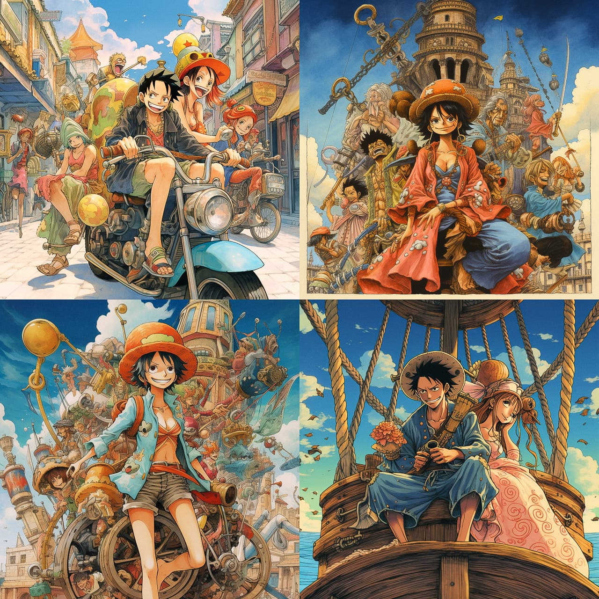

Eiichiro Oda
The man who changed the history of manga

Eiichiro Oda standing holding up a his fingers making out the number 32
Eiiricho Oda looking cool
Timeline of Eiichiro Oda's life:
- 1975 " - Eiichiro Oda was born"
- 1982 "- He won second place prize in "Jun-Nyuusen" when he was 7 years old. This is the same time when eiichiro Oda decided he wanted to become a manga artist."
- 1992 "- Won first place with the manga "Wanted!" in the Tezuka competition."
- 1993 "- wrote the manga "Kami Kara Mirai no Purezento."
- 1994 "- Wrote the Manga Ikki Yako."
- 1996 "- The starting point of One Piece was through Eiichiro Oda's Manga project of Romance Dawn."
- 1997 "- The first edition of One Piece manga was released and became very popular."
- 1999 " - The One Piece Manga was turned into an anime."
- 2004 " - Eiichiro Oda marries Chiaki Inaba. Who he met through the production of One Piece. Chiaki Inaba was the voice actor for the One Piece character Nami."
- 2006 "- Eiichiro and Akira Toriyama(creator of Dragon Ball) Worked together to create a collaboration project of both of their series called "Cross Epoch""
- 2009 "- One Piece Film: Strong Wrold was released."
- 2010 "- With the release of "3D2Y" chapter. Eiichiro Oda declared that the seires is half way complete."
- 2011 "- Eiichiro Oda and Mitsutoshi Shimabukuro(Creator of Toriko). Worked together on a collaboration piece called "One Piece x Toriko"."
- 1994 "- Wrote the Manga Ikki Yako."
- 1994 "- Wrote the Manga Ikki Yako."
- 1994 "- Wrote the Manga Ikki Yako."
- 1994 "- Wrote the Manga Ikki Yako."